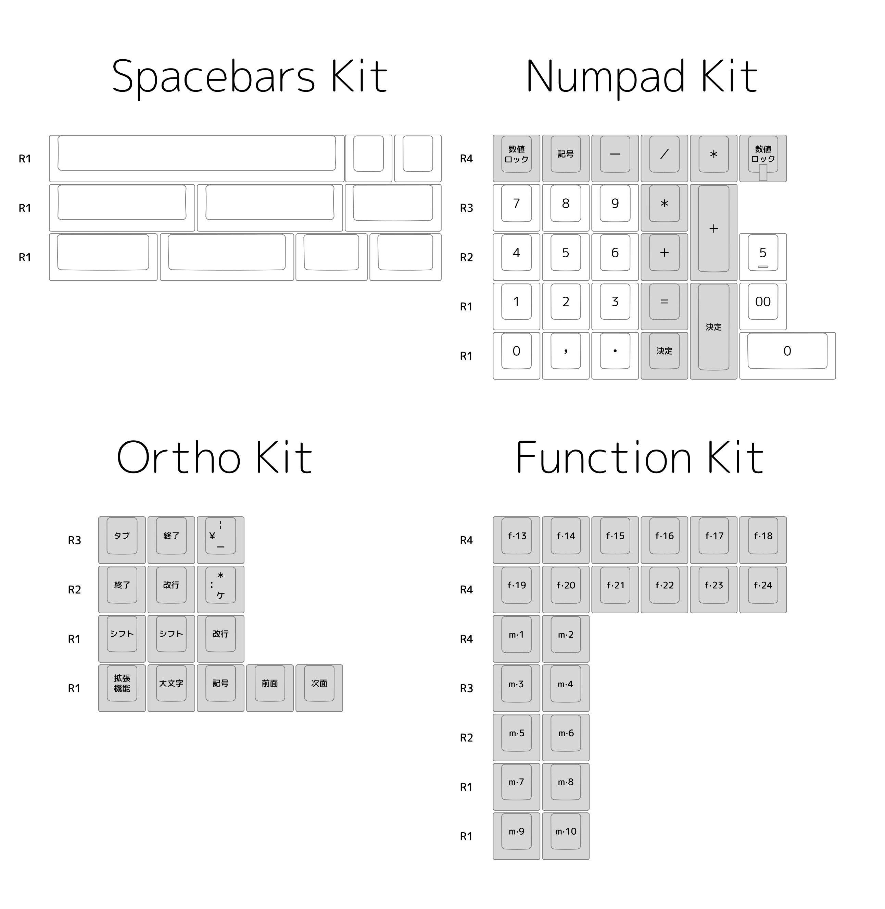

A simple keyset with retro legends.
Geekhack Thread Product PageSimpleJA attempts to recreate the vintage "cross-positioned" legends which were common on many vintage Japanese keyboards.
Many hours of research were conducted to create legends that were as genuine to the originals as possible.
Historically used legends from vintage boards were implemeneted wherever possible; those that did not exist were crafted carefully to match the others.
The basic white/grey color scheme was used as a neutral colorway that matches both the vintage style of the keyset as well as newer sleek keyboards.
The modifier keys were kept all-Japanese for a uniform look.
The Windows XP/Vista/7 icon was chosen for the Windows keys as a nice middle ground between the super modern 8/10 icon and the slightly cluttered 95/98 icon.
Enough keys to fill most form factors below TKL size.
1x 6U Convex 2x 3U Convex 1x 2.75U 1x 2.25U 1x 2U 2x 1.5U 2x 1U
Keys to fill a numpad, whether regular, all-1U, or part of a 1800 layout.
The order of the 1U modifiers are based on the style found on the NEC PC-8801 and PC-9801 series.
Many 1U keys which can help fill ortholinear and smaller ergonomic boards.
Includes both a vertical M1-M10 cluster for XT/AT inspired layouts, as well as a F13-F24 cluster for 122-key inspired battleships.